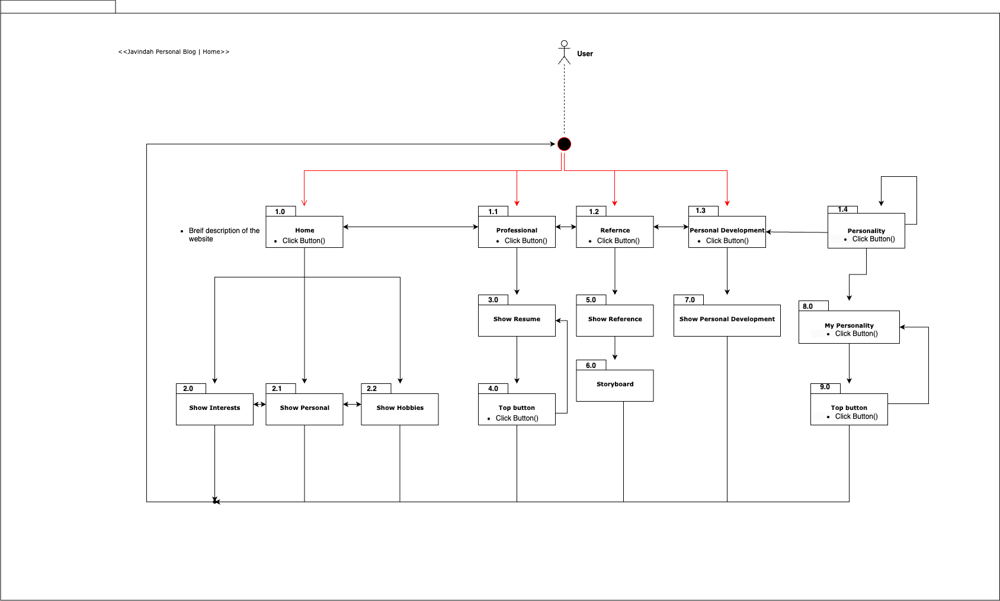

Storyboard of The Website |
|
|
 |
|
Website Theme |
|
Template Design: |
Personal Blog |
Parts of the Website: |
|
Pages |
Function |
Home |
Brief information about Javindah Hibbert, his hobbies, interests, personal traits, and contact information. |
Personality |
This page consists of what I learned from the book called Twelve Pillars, which was written by Jim Rohn and Chris Widener. My area of study, skills acquired, and navigation key at the bottom can be used to get more information on my personality. |
Professional |
The professional web page has a summary of my goals, contact information,skills, experience, and education. |
Reference |
This page contains all website used to assist with creating the web pages. |
Target Audience: |
|
| University lectures, University students, and Businesses. | |
Hosting Link: |
|